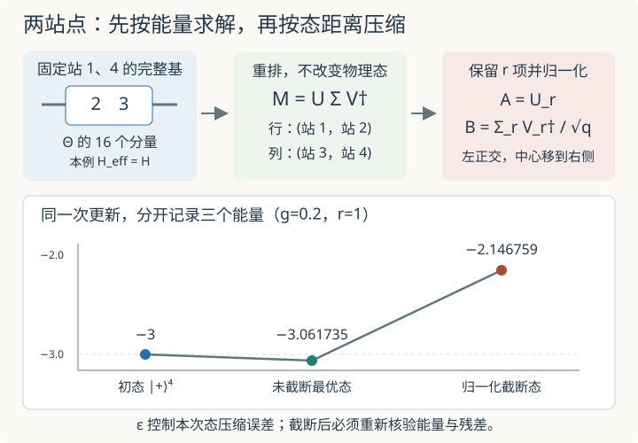

本页目录
基础衔接 10 · 两站点更新：求得更好，为什么截断后反而变差？
先修：Schmidt 分解与张量网络、MPS 范数、左右环境递推。本讲完成“合并两站—求解—分解—截断—重新核验”一次操作。外部块固定，实验只处理四站链的中间键；完整往返扫描与大规模 MPO 求解留给后续。
1. 一个操作里其实有两个优化目标
上一讲把中心之外的块固定，优化一个中心张量。本讲把相邻两个张量合在一起，允许它们之间的键暂时变大。求解时追求能量低；拆回两个张量时，为控制存储量，通常按奇异值大小丢弃一部分分量。后一步追求的是态的距离小。两次优化的目标并不相同。
本页始终使用开放 Ising 链
Pauli 本征值为 ±1，能量单位 J=1。先记住一个稍后会复算的反例：四站、g=0.2，从 \(|+\rangle^{\otimes4}\) 的能量 −3 出发，两站求解得到 −3.061734804；若随后只保留中间键的一个奇异值，归一化后的能量却变成 −2.146758936。求解这一步确实降能，截断却把收益全部抵消了。
2. 合并后，中间键可以暂时消失
固定左块站 1 到 j−1 与右块站 j+2 到 L，写
ℓ、ρ 是外部块指标，s、t∈{0,1} 是两个中心站的物理指标。若原来有两个张量 A、B，中间键指标 b，则
合并时消去 b；求解时直接变化 Θ 的所有分量，而不是要求它一直由原来那么窄的 b 分解。将 (ℓ,s) 合为行、(t,ρ) 合为列，得到矩阵
这里 χ_L、χ_R 是两侧外部键维。M 的秩最多为 min(2χ_L,2χ_R)，可能超过旧中间键维。这是两站点方法能够调整中间键的原因。
沿用上一讲每侧的范数 G、块内 Hamiltonian K、靠中心的边界 X 矩阵 C，按 (ℓ,s,t,ρ) 顺序：
第二行是两个中心横场，后三行是左边界键、中心内部键、右边界键。中间的 XX 直接作用在 s、t 上，不再经过旧中间键。求解 \(H_{\rm eff}\Theta=EN\Theta\) 时把 Θ 展平成向量。
下文先要求左右块都正交归一，此时 N=I。否则普通矩阵的 Frobenius 范数不等于物理态范数，不能直接把坐标 SVD 当成 Schmidt 截断；需先处理环境度量与规范。
3. SVD 拆回两个张量，正交中心往哪里放？
设优化后的 Θ 已归一化，对 M 做
U、V 的列正交归一。因为外部块基正交，这些 σ 同时就是物理切分“站 1…j | 站 j+1…L”的 Schmidt 系数。保留前 r 个，记
ε 是本次丢弃权重，不是能量。向右移动时，可以选择
这里 r 表示保留数，ρ 始终表示右块指标，只对保留的 a 求和。U 的列正交给出
所以左张量成为左正交张量，奇异值与总归一化留在右张量里，正交中心向右移动。向左移动则把 Σ/√q 吸收到 U，右张量取 V† 的行，从而满足右正交条件。这里选择的是规范位置，并非一次新的物理优化。

先用一个两项例子走完操作
取 \(M=\operatorname{diag}(\sqrt{0.96},0.2)\)。它的两个 Schmidt 权重是 0.96 和 0.04；保留一项后，未归一化矩阵为 \(\operatorname{diag}(\sqrt{0.96},0)\)，除以 \(\sqrt q=\sqrt{0.96}\) 后变成 \(\operatorname{diag}(1,0)\)。对应物理态就是从 \(\sqrt{0.96}|00\rangle+0.2|11\rangle\) 变成 \(|00\rangle\)。这里“保留 96%”指与原态的保真度，不是把剩下的态范数留成 0.96；实际传给下一步的态必须重新归一化。
把这个算例与图中的箭头对照：合并和重排只改坐标；求解会改变物理态；完整 SVD 只改表示；丢弃会改变物理态；除以 \(\sqrt q\) 恢复归一化。若某个保留位置跨过相等的奇异值，最佳截断方向可能不唯一，但最小误差与丢弃权重仍由奇异值决定。
4. 丢弃权重到底控制哪一种误差？
用 \(|\psi_*\rangle\) 表示优化后的归一化态，\(|\widetilde\phi_r\rangle\) 表示直接丢弃后、尚未归一化的态。Schmidt 分量正交，因此
截断 SVD 是 Frobenius 范数下的最佳秩≤r 近似。它说明离 ψ_* 最近，不说明这个秩限制下能量最低。将保留态归一化，\(|\phi_r\rangle=|\widetilde\phi_r\rangle/\sqrt q\)，得到
最后一式选用了截断自然继承的相位，使重叠为非负实数。不要把它与未归一化误差 ε 混为一谈。对任意有界 Hermitian 可观测量 O，还可用两个纯态的迹距离得到
这里 ‖O‖ 是算符范数，对 Hermitian 矩阵等于本征值绝对值的最大值。理由是两纯态密度矩阵差的迹范数为 \(2\sqrt{1-|\langle\psi_*|\phi_r\rangle|^2}\)，再用 \(|\operatorname{tr}(O\Delta\rho)|\le\|O\|\|\Delta\rho\|_1\)。若 H 的尺度随链长增大，同一个 ε 不能自动解释为同样小的总能量误差。
这个一般界还可以写成不受能量零点影响的形式。设有限维 Hermitian 的谱位于 \([o_{\min},o_{\max}]\)；两态都归一化，所以减去同一个常数倍 I 不改变期望值之差。取中点 \(c=(o_{\max}+o_{\min})/2\)，便有
它使用谱宽，通常比直接使用 \(2\|O\|\) 更紧。它仍然按 \(\sqrt\epsilon\) 缩放；下一条按 ε 缩放的能量界需要额外的基态前提。
本页四站特例还有更强的界：若 ψ_* 恰好是完整 H 的基态，能量为 E₀，最高能量为 E_max，则
把 φ_r 展成 √q ψ_* 加正交分量，正交分量的范数平方为 ε；本征态使交叉能量项为零，而其余谱在 [E₀,E_max] 内，所以得到该界。一般大链的一次局部优化不一定给出完整基态，不能直接套用这个前提。
5. 四站模型：每个张量都能放回完整态核对
取中心为站 2、3，左块只有站 1，右块只有站 4，两侧都保留完整基 |0⟩、|1⟩。所以 χ_L=χ_R=2，G_L=G_R=I，K_L=K_R=−gZ，C_L=C_R=X。中心有 2×2×2×2=16 个分量。
与上一讲的八维子空间不同，此处外部单站基没有损失信息，映射 W 就是按 |s₁s₂s₃s₄⟩ 排列的单位矩阵。因此 H_eff=H，中心最低能量在这个特例中恰好等于全链基态能量。大链环境通常只保留部分块态，这种等同不会普遍成立。
将最低本征向量按“前两站为行、后两站为列”重排为 4×4 矩阵，做 SVD 并保留 r=1…4。外侧两条键仍允许维数 2；r=1 只意味着两半链之间无纠缠，并不意味着每个站都是乘积态。 r=4 表示这一次中间切分不截断。
默认 g=1，四个奇异值约为
| 计算量 | 默认 g=1、r=2 |
|---|---|
| 更新前乘积态的能量 | −3 |
| 截断前最低能量 E₀ | −4.758770483 |
| 丢弃权重 ε | 0.00004206958113 |
| 归一化截断后能量 | −4.758517166 |
| 能量偏差 | 0.000253316879 |
| (E_max−E₀)ε 上界 | 0.000400398962 |
| 截断后完整物理残差 | 0.039565515 |
初态 \(|+\rangle=(|0\rangle+|1\rangle)/\sqrt2\)，所以 ⟨XX⟩=1、⟨Z⟩=0，三条键合计 −3。该初态在中间切分秩为 1，对所有实验保留数都可表示。
先比较默认值，再将 g 调到 0.2、r 调到 1，核对第一节的升能反例；最后保持 g，令 r=4，检查 ε 和物理残差是否降到舍入尺度。每次改变参数都会重新求解同一个四站模型并截断，不是在上一次状态上继续扫一轮。无截断时约 10⁻¹⁴ 的微小负能量偏差属于浮点舍入，并不违反变分下界。
无脚本参照：g=0.2、r=1 时，ε=0.460358839，截断前能量 −3.061734804，截断后 −2.146758936，高于初态 −3。g=1、r=4 时无丢弃，能量 −4.758770483，物理残差在舍入尺度。
6. 怎样把一次更新接进可靠的扫描？
一次更新应留下三份记录：旧态能量、未截断优化态能量、归一化截断态能量。只保存中间最漂亮的能量，会掩盖截断带来的变化。初态在局部搜索空间内时，精确求解的未截断能量不会升高；截断后要重新计算，不能沿用优化器返回的 E。
若需要每次接受的步骤都降能，可以比较截断态与旧态、拒绝升能候选；也可以增加保留数后再试。拒绝策略本身不保证摆脱局部极值，代价与收敛标准仍需独立分析。后续完整扫描还要移动中心、更新环境，并检查多轮能量变化、残差及对键维的敏感性。单次 ε 很小只能说明这次压缩损失小，不能证明搜索已经找到全局基态，也不能当作许多次截断的累计误差。
怎样在表格里区分三种“小”？
| 看到的数很小 | 它直接说明什么 | 还不能单独说明什么 |
|---|---|---|
| 本次 ε | 本次未截断态与归一化候选的保真度接近 1 | 候选距完整基态多近 |
| 候选与旧态的能量差 | 这次更新对能量的影响小 | 态已经停止变化 |
| 完整残差 \(\|(H-E)\phi\|\) | 态的能量分布集中；零残差对应本征态 | 该本征态一定是基态 |
若另已知道非简并基态能量 E₀ 和严格正的能隙 \(\Delta=E_1-E_0\)，可以从谱分解推出
因为每一份落在基态之外的概率都至少贡献 Δ 的能量。基态简并时，把单个向量的重叠换成整个基态子空间的权重；若不知道严格正的隙，就不能把一个小能量误差自动翻译成同样小的态误差。本页给精确 E₀ 是为了核验小模型；实际大链通常没有这份答案。
7. 两道迁移题
题一。 两个 Schmidt 系数为 √0.96 与 0.2，只保留第一个。分别求未归一化误差平方、归一化保真度、归一化误差平方。若原态是谱位于 [−3,5] 的 H 的基态，能量偏差能保证多小？
把三种误差分开记账
ε=0.04，q=0.96。未归一化误差平方为 0.04；归一化保真度为 0.96；归一化误差平方为 \(2-2\sqrt{0.96}\approx0.040408206\)。能量偏差在 [0,8×0.04]=[0,0.32] 内。这是上界，不是能量偏差等于 0.32；若原态不是完整基态，不能使用该谱宽乘 ε 的基态界。
题二。 左块两个基态正交但长度分别为 1、10，右块基正交归一。坐标矩阵是 diag(0.8,0.6)。直接保留坐标 SVD 最大值 0.8，是否得到物理上最接近的秩一态？
先把环境度量换成正交物理坐标
左 Gram 矩阵为 diag(1,100)。改用归一化左基后，物理系数矩阵变成 diag(0.8,6)，范数平方为 0.64+36=36.64。物理上该保留第二项。相对归一化原态，保留第二项的保真度为 36/36.64≈0.98253；错误保留第一项只有 0.64/36.64≈0.01747。坐标 Frobenius 范数与物理范数不同，排序当然也可能相反。这正是两站点截断前要求正交环境的原因。
速查与阅读
合并 Θ → 解广义或正交化后的本征问题 → 按 (ℓ,s)|(t,ρ) 重排 → SVD → 保留并归一化 → 把奇异值吸收到移动方向一侧 → 重算物理能量和残差。ε 记录态压缩损失；截断并非受秩约束的能量最优化。
算法背景见 Schollwöck，MPS 与 DMRG 综述，第 4.1、4.5、6 节及 Tensor Network 的两站点 DMRG 步骤。本页四站数值、升能对照及误差账本由所列 Hamiltonian 独立复算。资料核查：2026-09-13。
继续训练：两站点完整往返逐步重建当前态的块基，记录候选接受与拒绝，并用非零残差识别能量停滞。
沿扫描方向传递奇异值并维护有效块环境，见正交中心与环境缓存。
继续演化：张量时间演化与误差实际施加复数门、移动正交中心并截断；用三条轨迹区分时间分裂、压缩与浮点检查，给可证明的多步误差界。